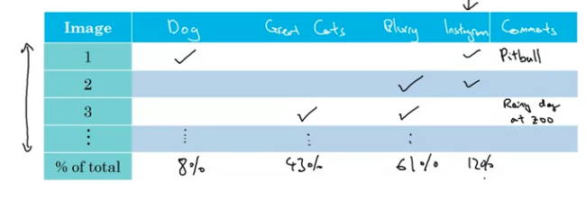
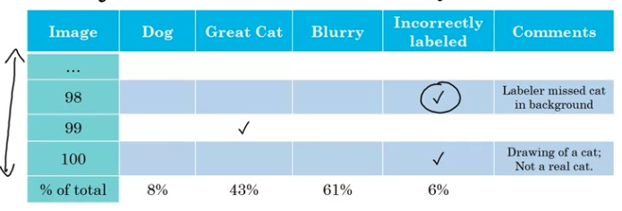
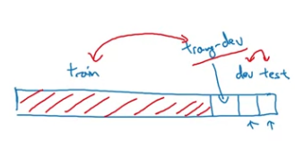
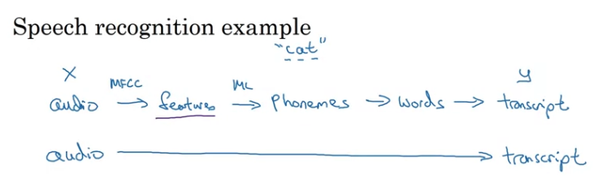
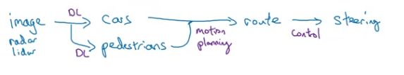

지난번에 이어, Andrew Ng 교수님의 “ML Strategy” 강의 이어서 정리합니다. 이번에는 ML 시스템 디버깅과 프로젝트 디자인 팁들이 소개됩니다.
Error Analysis
사람이 할 수 있는 일에 대한 learning algorithm이 아직 human performance에 미치지 못한다면, machine의 mistake를 수동으로(manually) 분석하여 인사이트를 얻고 추가 개선을 해 볼 수 있습니다. 이 과정을 Error Analysis라고 합니다.
Carrying Out Error Analysis
Error analysis를 통해 시스템의 “어떤” 성능을 높이는 게 좋을지 찾아볼 수 있습니다. Cat classifier의 예를 들면, 전체적인 성능을 높이는 것이 아니라 “dog picture가 cat으로 분류되는 경우 줄이기(false positive 줄이기)“와 같은 구체적인 목표를 세울 수 있습니다.
Error analysis를 수행하는 방식은 다음과 같습니다. 우선, dev set example 중에 잘못 판단된 mislabeled examples를 100+개 가량 모읍니다.(Y ≠ Y_hat인 항목들) 그리고 각각의 example들의 mislabel 특징을 분석해 보는 겁니다. 특정 패턴의 오류, 예를 들면 “큰 고양이들은 고양이로 인식되지 않는다” 와 같은 오류가 전체 오류 중 얼마나 차지하는 지 확인하고, 이를 개선해서 성능을 올릴 수 있을지 가늠해 봅니다. 이 중 가장 큰 비중을 차지는 오류 유형을 개선하는 데 집중한다면 효율적으로 성능을 개선할 수 있습니다.
Cat classifier의 예에서, 성능을 개선할 수 있는 방법들은,
- Fix pictures of dogs being recognized as cats
- Fix great cats(lions, panthers, etc.) being misrecognized as cats
- Improve performance on blurry images
등이 있을텐데요. Error analysis를 해서 다음과 같은 표를 작성해 보면, 가장 많은 에러가 속한 “blurry image”, “great cats” 문제에 집중하는 게 좋은 걸 알 수 있습니다.

단순하지만 효과적인 방법이라고 하는데, 여기서 error 분류를 뽑아낼 수 있으려면 data의 이해도가 높고 인사이트를 갖고 있어야 할 것 같아요.
Cleaning Up Incorrectly Labeled Data
Training에 사용되는 데이터가 깨끗하고 좋은 데이터면 이상적이겠지만, 현실에선 그렇지 않습니다. 간혹 잘못 된 label(dog인데 cat이라고 labeled)을 발견할 수도 있습니다. 그럴 땐 어떻게 해야 할까요?
Training set에서 발견되었을 때
- DL algorithms들은 training set의 “랜덤"에러에 꽤 robust 합니다
- Reasonably random, total data set is big enough라는 가정 하에서 무시할 수 있습니다
- 하지만 systematic error에는 less robust합니다 ⇒ white dog를 cat으로 일관되게 label 되어 있다면 문제가 될 수 있습니다
Dev/Test set에서 발견되었을 때
- Error analysis에 “incorrectly labled” 항목을 추가해 수행해 봅니다.
Incorrectly labeled data를 발견한다면 이 오류를 꼭 수정해야 할까요? 다음와 같이 incorrectly labled data가 에러의 6%를 차지하는 경우엔 이를 개선하는 게 좋을까요? 
이에 대한 Andrew Ng의 답은 아래와 같습니다.
My advice is, if it makes a significant difference to your ability to evaluate algorithms on your dev set, then go ahead and spend the time to fix incorrect labels. But if it doesn’t make a significant difference to your ability to use the dev set to evaluate classifiers, then it might not be the best use of your time.
이전 글에서 언급한 avoidable bias, variance 분석과 동일하게 접근하면 됩니다.
- Overall dev set error = 10%
- Errors due incorrect labels = 0.6%
- Errors due to other causes = 9.4%
⇒ 이 경우에는 9.4%인 다른 에러에 집중하는 게 좋고
- Overall dev set error = 2%
- Errors due incorrect labels = 0.6%
- Errors due to other causes = 1.4%
⇒ 이 경우에는 “incorrect labels"를 해결하는 게 좋습니다.
Dev set은 learning algorithm 을 고르는 용도임을 명심하고, incorrect label이 algorithm 선택에 영향을 줄 정도의 비중을 차지한다면 이를 고쳐야 합니다.
**“Incorrect examples”**를 수정할 때 주의해야 할 것들이 있습니다.
- Dev set과 test set은 같은 distribution이어야 합니다. 즉, dev set을 고친다면 test set도 함께 고쳐야 합니다. (그래도 slightly different distributions가 됨)
- 보통 false positive 위주로 살펴보게 되는데요(상대적으로 양도 적으니..), true negative 또한 살펴보는 게 좋습니다.
이런 분석이 의미 있을까 싶을 수 있겠지만, 현업에선 “manually 분석하는 것, human insight를 활용하는 것은 의미 있다.” 고 합니다.
Build your First System Quickly, then Iterate
위와 같은 error analysis를 통해 성능 개선이 가능하기 때문에, ML System을 만들 때도 agile 하게 움직이는 게 좋은 것 같습니다. ML System 구축 가이드라인은 다음과 같습니다.
- Set up development/ test set and metrics
- Set up a target
- Build an initial system quickly
- Train training set quickly: Fit the parameters
- Development set: Tune the parameters
- Test set: Assess the performance
- Use Bias/Variance analysis & Error analysis to prioritize next steps
Mismatched Training and Dev/Test Set
앞에서는 dev set과 test set의 차이에 대해서 이야기 했는데, 이번에는 training set과 dev/test set의 차이입니다.
Training and Testing on Different Distributions
데이터가 항상 부족한 현실에서는 ML 기반 서비스를 구축 시 training set과 dev/test set의 분포가 달라지는 경우가 꽤 있다고 합니다. 대표적인 예가, 서비스 초기에 데이터가 부족해서 다른 데이터로 보충하는 경우입니다. 사용자의 이미지를 기반으로 분류하는 실제 시스템과는 다르게, 웹에서 얻은 고해상도, 전문적인 사진, 구매한 사진으로 트레이닝을 하는 겁니다. 이럴 때 취할 수 있는 접근은 다음과 같습니다.
Option 1: 두 종류의 데이터를 합친 다음 shuffle → 이걸 train/dev/test 로 나눔
- +) 같은 distribution 활용한다는 장점
- -) dev set의 대부분이 보충한 이미지(진짜 타겟이 아닌) 가 됨 ⇒ 타겟이 아닌 곳에 optimize 하게 된다
Option 2: training set은 모두 보충한 이미지(웹) + 일부 타겟 이미지, dev/test 는 모두 타겟하는 이미지
- +) aiming the target correctly (dev/test set)
- -) train 과 dev/test 데이터 간 distribution 차이가 있다 ⇒ 하지만 그래도 long-term으로는 괜찮다
Bias and Variance with Mismatched Data Distributions
지난 글에서 bias/variance 분석을 통해 다음 개선 타겟을 정할 수 있다고 하였는데, “mismatched data distribution"을 갖고 있다면 training error와 dev error 차이를 variance problem으로 보기 어려울 수 있습니다. Data set 차이로 인한 성능 차이인지, 알고리즘 문제인지 구분할 수 없기 때문입니다. 이런 경우, 새로운 data set을 정의할 필요가 있습니다. 바로 “Training-dev set” 입니다.

Training-dev set은 training set과 동일한 distribution을 갖나, training 용도가 아닌, dev data set 입니다.

Training set과 Training-dev set의 에러 차이가 크다면, 둘은 같은 distribution을 가지므로, variance problem을 판단할 수 있습니다. Training set과 Training-dev set의 에러 차이가 크지 않지만 Training-dev set과 Dev set의 에러 차이가 크다면 data mismatch 문제라 판단할 수 있습니다.
Addressing Data Mismatch
: no systematic solutions… manual insights… (but helps!)
manually 특징을 잡아내야 한다 - data 차이의 원인 찾기
- Carry out manual error analysis to try to understand difference between training and dev/test sets
- e.g., nosiy - car noise, street numbers
- Make training data more similar; or collect more data similar to dev/test sets
- e.g., simulate noisy in-car data → artificial data synthesis
Artificial data synthesis: 데이터 생성 (조작하는 것)
(augmented data)
- e.g., 의도적으로 car noise랑 합치는 것 ㅎㅎ
- 주의) sounds + car noise 합칠 때, 제한된 양의 car noise를 반복(여러 사운드와 합쳐서) 사용한다면, 그 noise에 overfitting 될 수 있는 위험이 있다, 사람이 보기엔 괜찮아 보이더라도..
- 주의) car image를 graphic을 만들어서 사용할 때도 동일 → 특정 생성 패턴에 overfitting될 수 있다 (사람 눈에는 동일해 보여도..)
Learning from Multiple Tasks
ML system을 구성할 때 여러 개의 task(learning algorithm)을 함께 사용하는 경우가 있습니다.
Transfer Learning
(특히 큰 모델에서, 데이터가 많을 땐) training에 상당히 많은 시간이 소요됩니다. 하지만 새로운 어플리케이션을 위해 항상 새로 학습시켜야 하는 건 아닙니다. “Transfer learning"을 사용한다면, cat classifier에 사용하던 알고리즘을 가져 와 x-ray scan에서도 활용할 수 있습니다. (예제일 뿐.. 아닐 수도…)
Transfer learning이 가능한 이유는 low level features 는 서로 다른 system에서 learning하는 것이 유사하기 때문입니다. 이미지 분류 알고리즘들은 모두 lines, dot, curves와 같은 기본적인 이미지 구성 요소들을 구별하는 feature들을 갖고 있고, 이건 다른 이미지 분류 알고리즘에도 동일하게 적용 가능합니다.
예를 들어, 다음과 같은 단계로 transfer learning을 할 수 있습니다.
- 첫 번째 training: image recognition을 위한 training 진행
- = pre-training
- 웹상에 공유된 pre-training 된 learning algorithm들을 활용할 수 있습니다
- 두 번째 training: radiology image로 training 진행
- =fine-tuning
- Neural Network의 마지막 몇 개의 layer의 weight만 random initialize 하고 training 합니다
- 뒤에 몇 layer를 더 추가할 수도 있습니다 (특히 데이터가 충분하지 않은 경우)
transfer learning이 의미 있을 때 는 다음과 같습니다.
- 첫 번째 분야에는 데이터가 많고, 두 번째 분야에는 데이터가 상대적으로 부족한 경우입니다.
- 얼굴 인식 사내 출입 시스템을 만들 때, 직원의 사진만으로 충분히 training 시킬 수 없을 겁니다. 일반적인 얼굴 인식 알고리즘으로 pre-training 한 후, 임직원의 얼굴을 추가 training 시킨다면 보다 높은 성능을 얻을 수 있습니다. 반대의 경우엔 transfer learning 이 유효하지 않습니다.
- 두 분야의 input이 같아야 합니다. (Task A and B have the same input X) 둘 다 image거나 둘 다 audio여야 합니다.
Multi-task Learning
Transfer learning이 두 개의 training을 sequential 로 수행하는 거라면, multi-task learning은 여러 training을 동시에(simultanously) 수행하는 것 입니다.
자율주행차의 예를 들면, 자율주행차는 주행 시 많은 사물, 오브젝트를 detect 해야 합니다. pedestrians, cars, stop signs, traffic lights 등등. 이 떄 필요한 “object detection algorithm"은 N개가 됩니다.
이 때, 각각의 object detection을 위한 N개의 Neural Network를 구성하는 것 보다, 앞의 layer들을 공유하는 게 더 성능이 좋다고 합니다. N-dimentional의 Y를 가져야 하고, N개 분류 중 하나를 선택하는 Softmax와는 다르게, 하나의 이미지가 multiple label을 가질 수 있습니다.
multi-task learning이 의미있을 때는 다음과 같습니다.
- Training on a set of tasks that could benefit from having shared low-level features
- Usually, Amount of data you have for each task is quite similar
- 단 하나의 task 만 필요하더라도 다른 training set도 같이 training 시키면 도움된다
- Can train a big enough neural network to do well on all the tasks
- 충분히 크지 않다면 multi-task learning이 성능 좋지 않다
보통은 transfer learning이 더 많이 쓰이고, mutli task learning은 computer vision의 object detection에서 많이 쓰인다고 합니다.
End-to-end Deep Learning
마지막으로, ML System 구성 팁입니다.
What is End-to-end Deep Learning
E2E DL은 모든 stage를 하나의 Neural Network에 대응시키는 것을 의미합니다. E2E DL의 대표적인 예는 “Speech Recognition” 입니다.

예전에는(traditional pipeline) audio의 구성요소를 파악하고(intermediate component = audio → phonemes → transcript) transcript로 바꾸는 과정이 되었는데, 최근에는 이 전체 과정을 하나의 Neural Network 로 구성하는 경우가 많다고 합니다.
data가 적을 때(e.g., 고작 3000개)엔 traditional pipeline이 잘 동작하지만, 데이터가 충분히 많다면(e.g., 10,000 ~ 100,000개) E2E가 잘 동작한다고 합니다.
Face recognition system은 E2E 보다 multi-step approach 를 더 많이 활용하는 예시입니다.
Image → identity 로 바로 매핑하도록 training 할 수도 있지만, 다음과 같은 multi step approach 활용하면 더 좋은 성능을 얻는다고 합니다.
- detect person’s face
- zoom and crop the face → 두 개의 사진을 주고 동일 인물인지 확인, new image가 10,000 개 중 하나와 같은 사람인지 확인하는 training
이 예제에서는 E2E 보다 multi-step으로 쪼개는 것이 더 의미있는 이유는,
- 두개로 나누면 훨씬 간단한 문제가 되고
- 각 sub-task가 많은 데이터를 갖고 있기 때문입니다.
- face detection 용 데이터, identity 구분 데이터 각각이 많음
- 두 개를 합친 경우에 대한 데이터는 많지 않다
같은 이유로, machine translation 에서는 (English, French)와 같은 E2E 데이터가 많기 때문에 E2E가 더 잘 작동합니다.

Autonomous car 또한 모두 Deep Learning만을 사용하지는 않습니다. 일부 X -> Y 매핑만 DL로 하는 경우가 많습니다. DL이 유용한 경우에만 적용하는 것이 좋습니다.
Whether to use End-to-end Deep Learning
그럼 E2E DL을 정확히 언제 사용해야 될까요? E2E DL의 장, 단점은 아래와 같습니다.
Pros:
- Let the data speak (human preconception 을 강제하지 않는 게 더 좋을 때)
- e.g., speech recognition의 phoneomes는 사람이 강제로 만든 개념이다
- Less hand-designing of components needed
Cons:
- May need large amount of data
- Excludes potentially useful hand-designed components (manual knowledge를 넣을 기회가 있으면 좋은 경우)
- data 부족할 땐 hand-design으로 human insight을 넣으면 유용하다
E2E DL을 도입할지 말지 결정하는 key question은,
Do you have sufficient data to learn a function of the complexity needed to map x to y?
입니다. 결국 데이터가 키인 것 같네요!